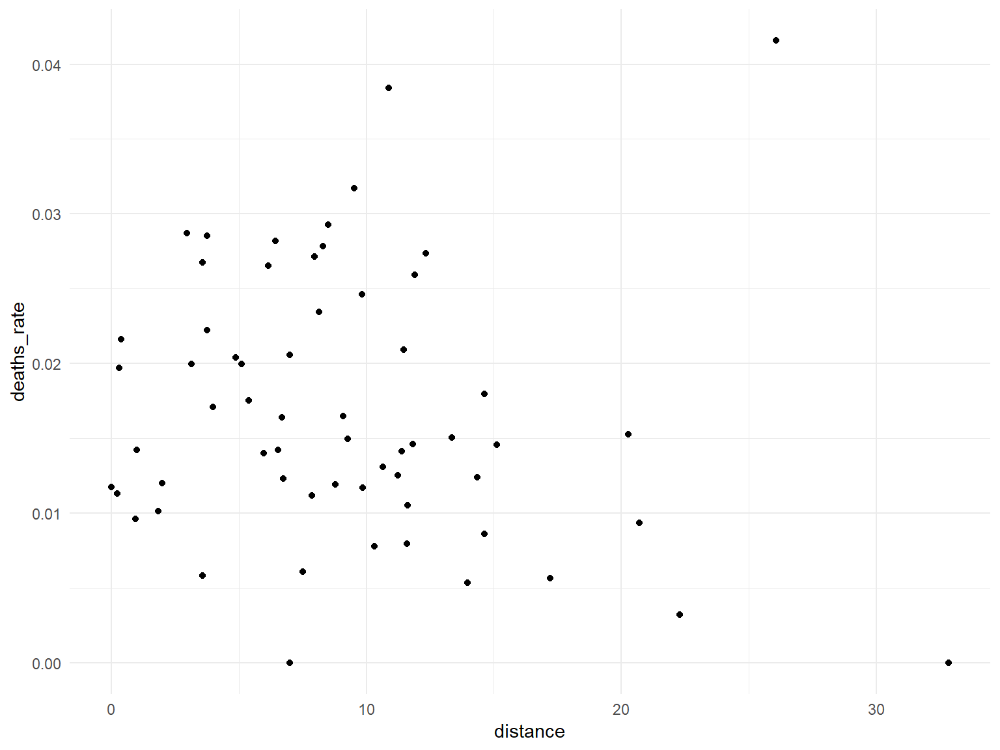
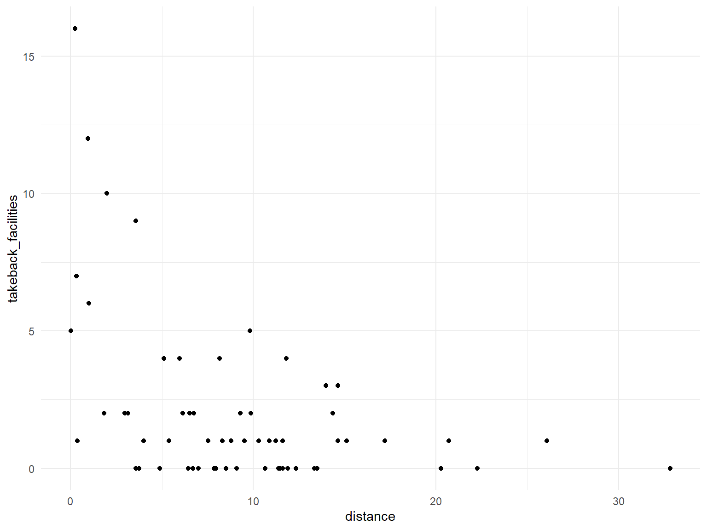
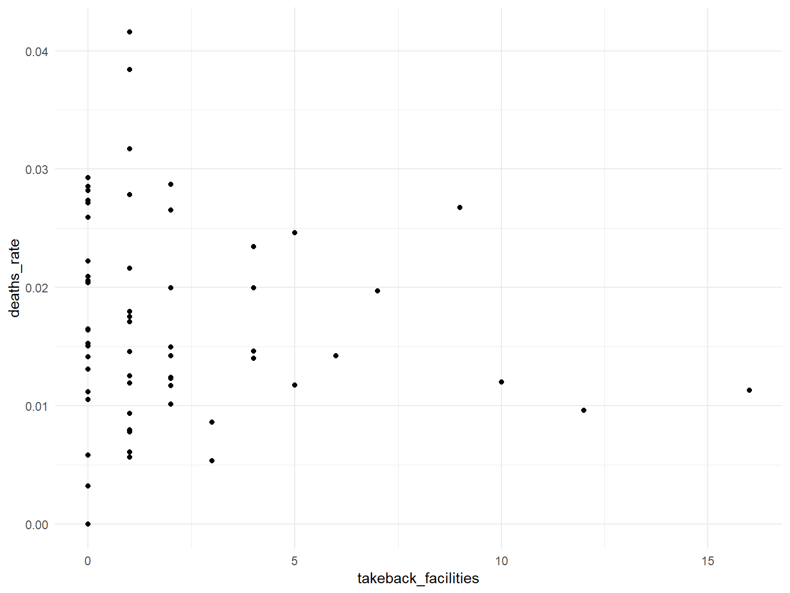
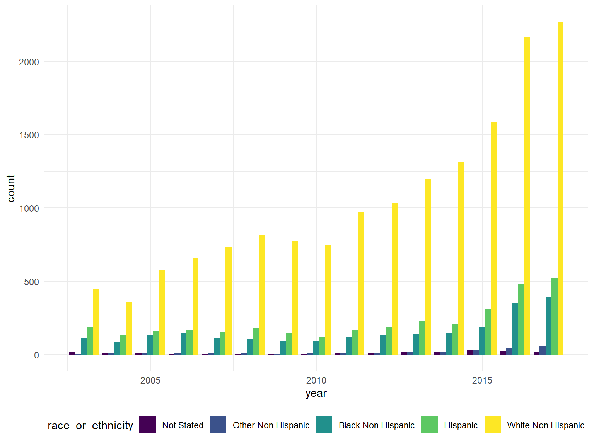
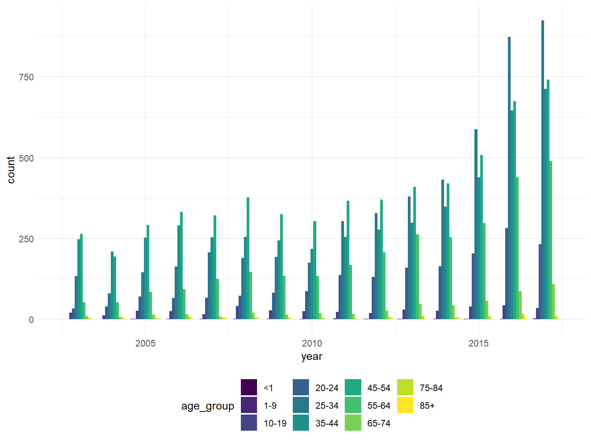
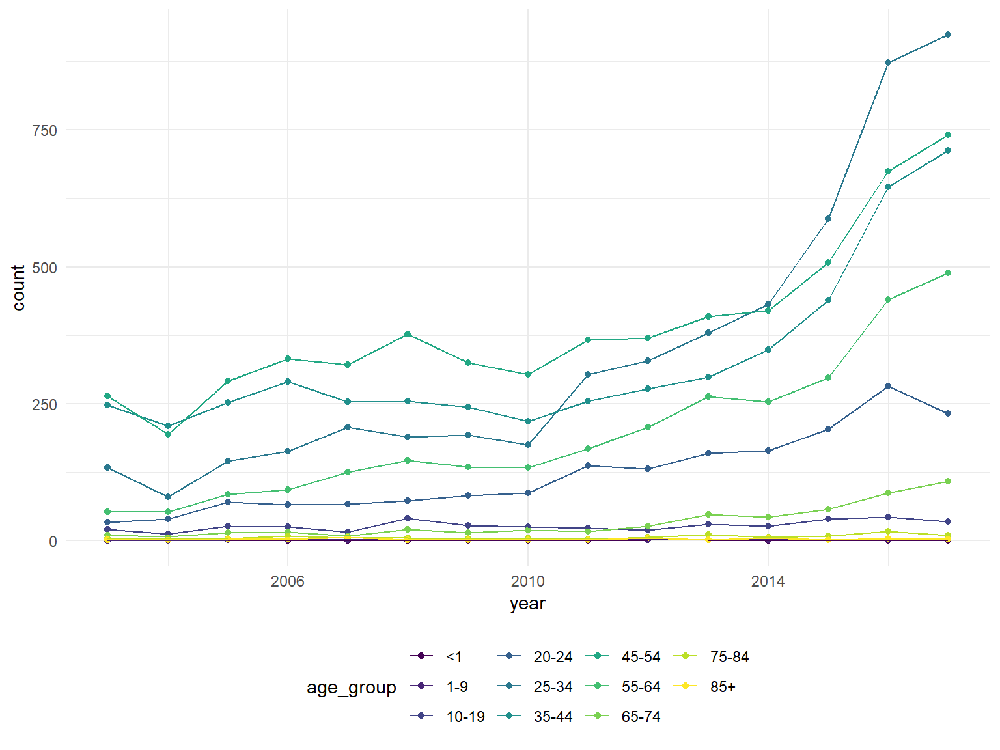

Graphs of Opioid Deaths
Julia Thompson
11/30/2019
ER visits by county & distance to treatment facility
Is there any relationship between number of ER visits and distance to treatment facility?
opioid_death_data = janitor::clean_names(read_csv('./opioid_related_deaths.csv'))## Parsed with column specification:
## cols(
## Year = col_double(),
## County = col_character(),
## `Opioid Poisoning Deaths` = col_double()
## )county_pop = janitor::clean_names(read_excel("./data/county_pop.xlsx"))
opioid_treatment_distance = janitor::clean_names(read_csv('./distance_to_treatment.csv'))## Parsed with column specification:
## cols(
## STATEFP = col_character(),
## COUNTYFP = col_character(),
## YEAR = col_double(),
## INDICATOR = col_character(),
## VALUE = col_double(),
## STATE = col_character(),
## STATEABBREVIATION = col_character(),
## COUNTY = col_character()
## )Because distance to nearest treatment facility data is from 2017, look at opioid deaths in just 2017.
# clean opioid death data #
opioid_death = opioid_death_data %>%
filter(year == 2017) %>%
select(-year)
county_pop =
county_pop %>%
mutate(
county = str_replace(county, " County", "")
)
opioid_treatment_dist =
opioid_treatment_distance %>%
rename(distance = value) %>%
filter(state == 'New York') %>%
select(county, distance)
# get rid of "county" in opioid_treatment_distance
opioid_treatment_dist =
opioid_treatment_dist %>%
mutate(
county = str_replace(county, " County", "")
)
treatment_death =
left_join(opioid_treatment_dist, opioid_death, by = "county")
treatment_death_final =
left_join(treatment_death, county_pop, by = "county") %>%
select(-rank) %>%
mutate(
deaths_rate = (opioid_poisoning_deaths / population)*100
)any relationship between rate and distance? Nope… the shorter the distance, the more deaths. Looking at rate, there is no real pattern? Kinda interesting that there’s no relationship I guess.
ggplot(treatment_death_final, aes(x = distance, y = opioid_poisoning_deaths))+
geom_point()
ggplot(treatment_death_final, aes(x = distance, y = deaths_rate))+
geom_point()
take_back = read_csv("./data/take_back.csv") %>%
janitor::clean_names() %>%
select(county) %>%
group_by(county) %>%
summarize(
takeback_facilities = n()
)## Parsed with column specification:
## cols(
## Name = col_character(),
## `Address Line 1` = col_character(),
## `Address Line 2` = col_character(),
## City = col_character(),
## State = col_character(),
## `Zip Code` = col_double(),
## County = col_character(),
## `Available to Public?` = col_character(),
## `Location 1` = col_character()
## )compare number of pill take back locations by county
treatment_death_final = treatment_death_final %>%
left_join(take_back, treatment_death_final, by = "county")
treatment_death_final = treatment_death_final %>%
mutate(
takeback_facilities = replace_na(takeback_facilities, 0)
)
ggplot(treatment_death_final, aes(x = distance, y = takeback_facilities))+
geom_point()
ggplot(treatment_death_final, aes(x = takeback_facilities, y = deaths_rate))+
geom_point()
https://www.health.ny.gov/statistics/opioid/data/pdf/nys_opioid_annual_report_2017.pdf
Look at demographic data
deaths_age_grp = read_csv("./data/deaths_age_group.csv") %>%
janitor::clean_names() %>%
pivot_wider(
names_from = age_group,
values_from = opioid_poisoning_deaths
) %>%
janitor::clean_names()## Parsed with column specification:
## cols(
## Year = col_double(),
## Region = col_character(),
## `Race or Ethnicity` = col_character(),
## Sex = col_character(),
## `Age Group` = col_character(),
## `Opioid Poisoning Deaths` = col_double()
## )Deaths by race by year:
deaths_by_year = deaths_age_grp %>%
select(year, region, race_or_ethnicity, sex, total) %>%
group_by(year, race_or_ethnicity) %>%
summarize(
count = sum(total)
)
ggplot(deaths_by_year, aes(x = year, y = count, fill = race_or_ethnicity)) +
geom_bar(stat = "identity", position="dodge")
Deaths by age group by year
# deaths_by_age = deaths_age_grp %>%
# select(-region, -race_or_ethnicity, -total, -sex) %>%
# group_by(year) %>%
# summarize(
# "1_to_9" = sum(x1_9, na.rm = T),
# "10_to_19" = sum(x10_19, na.rm = T),
# "65_to_74" = sum(x65_74, na.rm = T),
# "75_to_84" = sum(x75_84, na.rm = T),
# "85+" = sum(x85, na.rm = T),
# "<1" = sum(x1, na.rm = T),
# "20_to_24" = sum(x20_24, na.rm = T),
# "25_to_34" = sum(x25_34, na.rm = T),
# "55_to_64" = sum(x55_64, na.rm = T),
# "35_to_44" = sum(x35_44, na.rm = T),
# "45_to_54" = sum(x45_54, na.rm = T)
# )
deaths_by_age = read_csv("./data/deaths_age_group.csv") %>%
janitor::clean_names() %>%
select(-region, -race_or_ethnicity, -sex) %>%
filter(age_group != "Total") %>%
group_by(year, age_group) %>%
summarize(
count = sum(opioid_poisoning_deaths)
)## Parsed with column specification:
## cols(
## Year = col_double(),
## Region = col_character(),
## `Race or Ethnicity` = col_character(),
## Sex = col_character(),
## `Age Group` = col_character(),
## `Opioid Poisoning Deaths` = col_double()
## )ggplot(deaths_by_age, aes(x = year, y = count, fill = age_group)) +
geom_bar(stat = "identity", position="dodge")
ggplot(deaths_by_age, aes(x = year, y = count, color = age_group)) +
geom_point() +
geom_line()
Might need to adjust for population, proportion of ethnicity, etc.